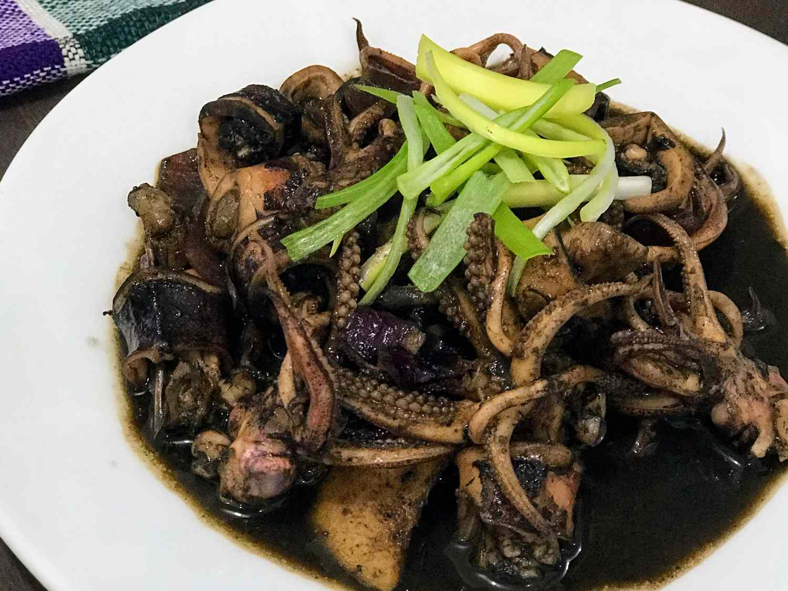

Odin's Project
Back to Home
Squid Adobo

Adobong pusit is a Filipino squid recipe that tastes best if you use fresh, smaller squid. Squid is simmered with onion, garlic, tomato, vinegar, and soy sauce for a tasty meal.
| Prep Time |
10 minutes |
| Cook Time |
35 minutes |
| Servings |
5 |
Why You will Love This Recipe
The tangy-savory sauce in this recipe, made from vinegar and soy sauce, pairs well with rice.
Reviewers praise the carefully balanced flavors in this sweet and salty dish.
All recipes member Tom says, "Will definitely make again, really good recipe for squid."
Ingredients
- Squid, cleaned
- ½ cup white vinegar
- ½ cup water
- Salt and ground black pepper to taste
- 2 tablespoons olive oil
- 1 small onion, minced
- 2 cloves garlic, minced
- 1 tomato, chopped
- 1 tablespoon soy sauce
Directions
- Combine squid, vinegar, and water in a small pot over medium heat; season with salt and pepper. Simmer for 10 minutes.
- Meanwhile, heat olive oil in a saucepan over medium heat; cook and stir onion and garlic in hot oil until softened, 5 to 7 minutes. Stir in tomato and soy sauce.
- Pour squid mixture into tomato mixture and bring to a simmer; cook for 20 minutes.